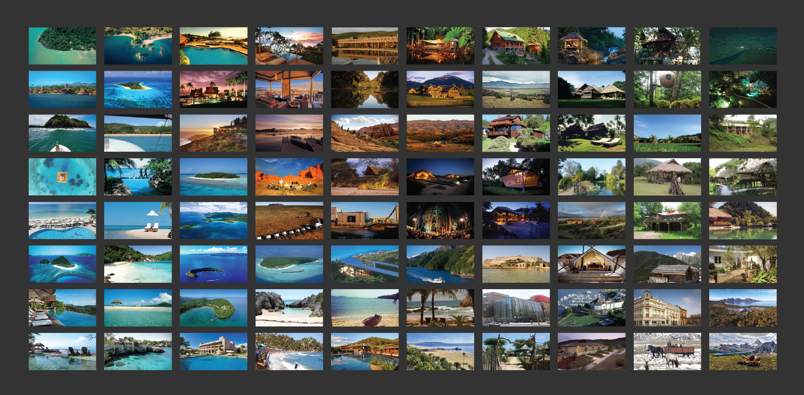
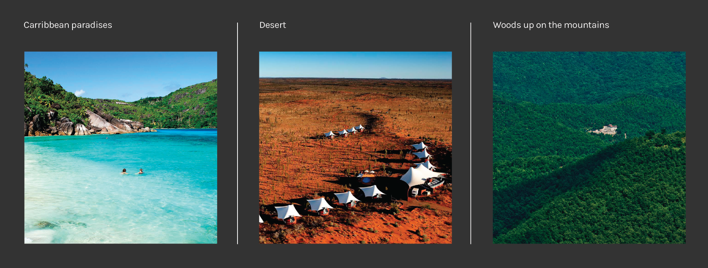

Introduction
What kind of imaginary is linked to the tech-free holidays? Which are the landscapes that best represent them? To answer these questions we have been analysing all the images related to these places, the kind of package they offer and their logos. Each place has its own evocative imaginary and all the images found have been organised in a grid (see the image below).

The images highlight the main tech-free holidays locations: the caribbean paradise, the desert, the woods up on the mountains (see the image below).

To recreate the feeling of the Carabbean Paradise, the desert and the woods, all the images representing each holiday destination category have been merged together using a software called Autopano. The final result is a new and unique image made by overlapping all the images for each type of holiday. The final image suggest a more complete visualisation of each landscape (see the three images below).
The logos analysis aims to show the whole imaginary linked to the theme, comparing all the logos in a grid and juxtaposing their different nature: from the most illustrative logo to the most elegant one, from handmade typography to stretched images (see the image below).